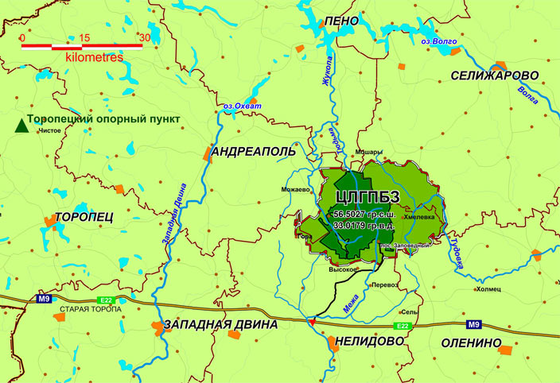
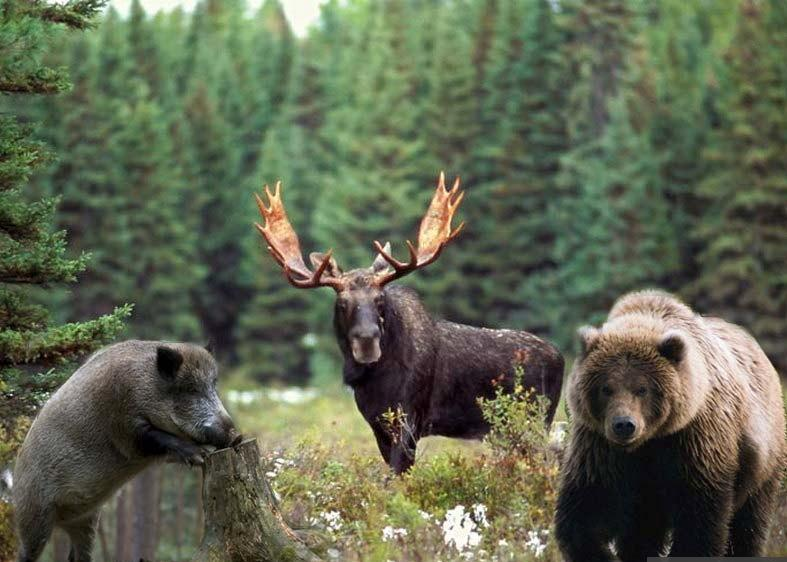
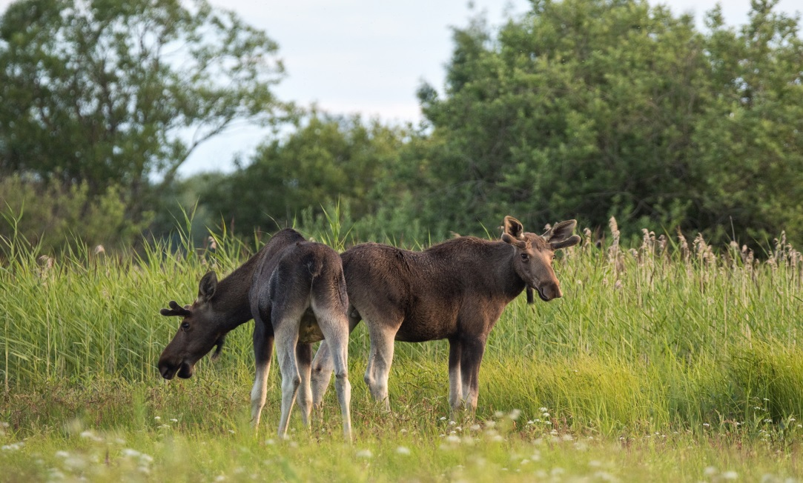

Оленино
Природа
1. Водораздел трех морей: Балтийского, Черного, Каспийского

Тверская область – самая большая область Центральной России. На ее территории находятся истоки крупнейших рек Восточной Европы. Географы называют эту территорию Главным водоразделом Русской равнины. В историко-географическом отношении Валдайскую возвышенность можно назвать Великим Водоразделом Каспийского, Чёрного и Балтийского морей. История его освоения показывает, что только на Валдайской возвышенности, почти целиком расположенной в пределах Тверской области, сходятся воедино три огромных культурных центра. Здесь встречались народы лесной Европы (через Западную Двину), Причерноморья и Восточного Средиземноморья (через Днепр), различных регионов Восточной Европы и Азии (через Волгу).
2. 2. Оленинский государственный зоологический (охотничий) заказник


Расположен севернее д. Тархово. Здесь охраняются растения, занесенные в Красную Книгу, осуществляется воспроизводство лося, глухаря, кабана, медведя